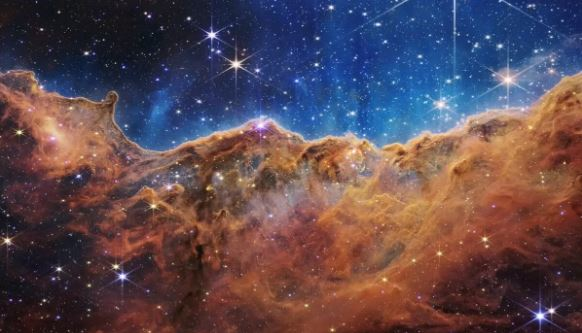
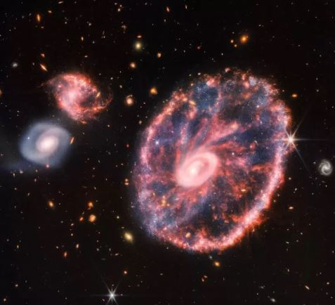
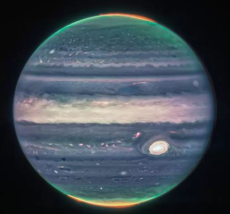
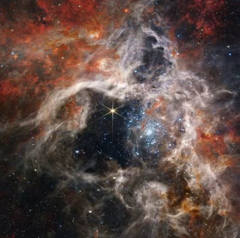
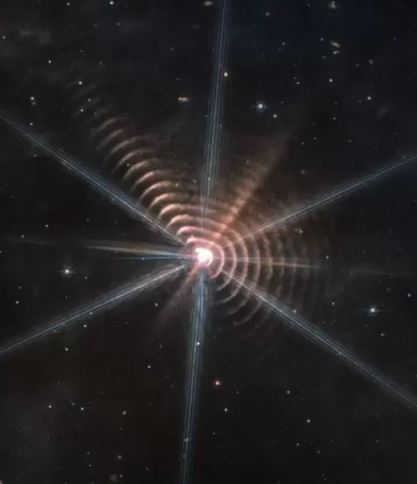
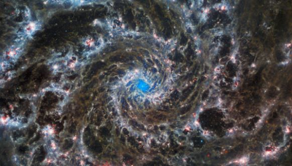
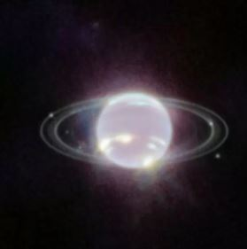

1. Durante los primeros días de junio, el presidente de Estados Unidos, Joe Biden, junto a la NASA, revelaron las primeras imágenes del telescopio James Webb. Se trata de una captura de numerosas galaxias a 30 millones de años de distancia.

2. Luego del primer vistazo, al día siguiente, la NASA reveló una galería de fotografías del gigante telescopio, donde destaca la Nebulosa Carina. Se trata de “una joven región de formación estelar cercana llamada NGC 3324”.
Esta fue la primera vez que se fotografiaron áreas de nacimiento de estrellas previamente invisibles.

3. En poco tiempo, el James Webb logró recoger imágenes de la caótica galaxia Rueda de Carro y reveló nuevos detalles sobre la formación de estrellas y los agujeros negros.
La instantánea, que también revela el comportamiento del agujero negro dentro del centro galáctico de la galaxia, proporciona una nueva visión de cómo esta ha cambiado a lo largo de miles de millones de años.

4. El 22 de agosto pasado, el telescopio evidenció el increíble espectáculo de tormentas gigantes, anillos y auroras boreales del Júpiter, el planeta más grande del Sistema Solar.

5. A solo 161 mil años luz de distancia, en la galaxia de la Gran Nube de Magallanes, la Nebulosa de la Tarántula es la región de formación estelar más grande y cercana a nuestra Vía Láctea.

6. Dentro de su aventura por el espacio, el telescopio James Webb captó un impresionante fenómeno de anillos que provienen de una estrella. En realidad, se trata de dos astros entrelazados y que parecen uno solo.

7. Durante agosto, la NASA reveló una nueva imagen de la llamada “Galaxia fantasma”, capturada por el telescopio espacial Hubble años atrás.

8. NASA reveló recientemente otra de las ya decenas de imágenes del James Webb. Esta vez el telescopio espacial apuntó hacia Neptuno y captó sus anillos como nunca antes vistos.